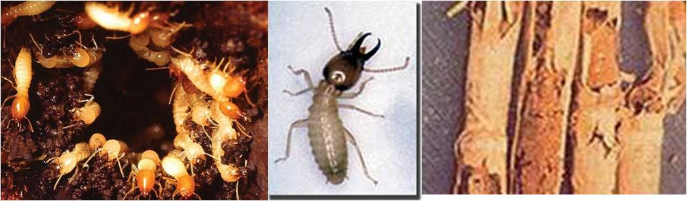

| Home |
| SUGARCANE |
| 1. Early Shoot Borer |
| 2. Internode Borer |
| 3. Top Borer |
| 4. Root Borer |
| 5. Whitegrub |
| 6. Termites |
| Questions |
| Download Notes |
Pests of Sugarcane :: Major Pests :: Termites
6. Termites: Odontotermes obesus (Termitidae: Isoptera) A major problem in light soils. poor germination of setts (after planting), characteristic semi-circular feeding marks on the margin of the leaves in the standing crop. Entire shoot dries up and can be pulled out. Setts hollow inside and may be filled with soil. Cane collapses if disturbed; rind filled with mud. Adults are cream coloured tiny insects resembling ants with dark coloured head. |
 |
Management
with 500 L water/ha. |